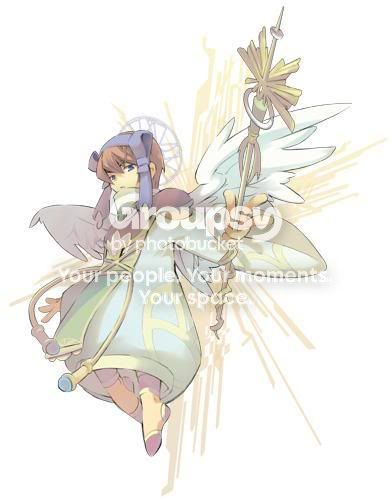
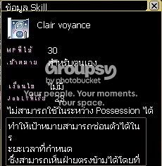

*0* Druid Guide *0* (ด้วยความรู้เท่าที่มีในโคลสจ้า)
เจ้าของกระทู้

*0* Druid Guide *0*

เห็นอาชีพอื่นมี Guide กันดีๆ คนคุยเยอะมากมาย แต่ของ Vates Druid Bard
เงียบเหงาเหลือเกิน แถมมีแค่ Vates Guide อย่างเดียวด้วย (คนน้อยอีกตะหาก)
เราก็เลยมาทำ Druid Guide ซะหน่อย เผื่อคนที่เล่นสายนี้จะได้มาแลกเปลี่ยนความรู้กัน
ก่อนอื่นเลยต้องขอบอกไว้ว่า "อาจจะมีข้อผิดพลาดไม่มากก็น้อย เพราะเป็นความรู้เท่าที่มี ในช่วงโคลสเบต้าจ้า"
แล้วก็ขอขอบคุณ โอ๋ Chi|3i ป๋าโอ๊ต [OaDDeR] แล้วก็ เฟ ObiG|ed (เขียนถูกป่าวหง่ะ)
มากมาย ที่ช่วยเราแชร์ช่วงหลังๆที่เพื่อนๆหายไปหมดแล้วมาแต่ดีโดยตลอดจ้า
แล้วก็ Mamamushi ที่ให้ตังเรามา 1m เพื่อที่จะรี stat&skill ไปๆมาๆจ้า
* Job Bonus * ตั้งแต่ Job 1-50 มีดังนี้จ้า
JobLv /STR /DEX /INT /VIT /AGI /MAG เรียงตามนี้นะ
1 3 4 8 1 3 8
2 3 5 8 1 3 8
3 3 5 8 1 3 9
4 4 5 8 2 4 9
5 4 5 9 2 4 9
6 4 5 9 2 4 10
7 4 5 9 2 4 10
8 4 6 9 2 4 10
9 4 6 10 2 4 10
10 4 6 10 2 4 11
11 4 6 10 2 4 11
12 5 6 10 2 5 11
13 5 6 11 2 5 12
14 5 7 11 2 5 12
15 5 7 11 2 5 12
16 5 7 11 2 5 12
17 5 7 12 2 5 13
18 5 7 12 2 5 13
19 5 7 12 2 5 13
20 6 8 13 3 6 14
21 6 8 13 3 6 14
22 6 8 13 3 6 14
23 6 8 13 3 6 14
24 6 8 14 3 6 15
25 6 8 14 3 6 15
26 6 8 14 3 6 15
27 6 9 14 3 6 15
28 6 9 15 3 6 16
29 7 9 15 3 7 16
30 7 9 15 3 7 16
31 7 9 15 3 7 17
32 7 9 16 3 7 17
33 7 10 16 3 7 17
34 7 10 16 3 7 17
35 7 10 16 3 7 18
36 7 10 17 3 7 18
37 8 10 17 4 8 18
38 8 10 17 4 8 19
39 8 11 17 4 8 19
40 8 11 18 4 8 19
41 8 11 18 4 8 19
42 8 11 18 4 8 20
43 8 11 18 4 8 20
44 8 11 19 4 8 20
45 9 12 19 4 9 21
46 9 12 19 4 9 21
47 9 12 20 4 9 21
48 9 12 20 4 9 21
49 9 12 20 4 9 22
50 9 12 20 4 9 22
*ดูงงๆ งี้ไปก่อนนะ -3- ไว้จะทำดีๆมาให้ทีหลัง -3-
*ถูกไม่ถูกบอกด้วยนะ ^^
- วิธีการเปลี่ยน Druid

* Skill Druid *
 Food Fighter Passive Job Lv.1 Max Lv.5
Food Fighter Passive Job Lv.1 Max Lv.5
ทำให้ประสิทธิภาพอาหารมากขึ้น (กินแล้วเยอะขึ้นน่ะเอง) แล้วก็กินเร็วขึ้นด้วยนะจะบอกให้
Lv.1 15% Lv.2 20% Lv.3 25% Lv.4 30% Lv.5 35%
 Seal Active Job Lv.1 Max Lv.3
Seal Active Job Lv.1 Max Lv.3
ขัดขวางสกิลที่เป็นกายภาพ (คือหยุดไปเลยนะ ร่ายไม่ออก) เมื่อสำเร็จ ผู้ที่โดนร่ายจะโดน Fix Delay
*โดยที่ Skill Lv.3 ผลของการขัดขวางเมื่อสำเร็จจะอยู่ต่อเนื่อง 5 วินาที O_o!!
*ส่วนตัวคิดว่าใช้ยากนิดนึงหง่ะ เพราะสกิลกายภาพปกติมันร่ายเร็วนิ ไม่ก็ไม่ร่ายเลย (รึเปล่า)
Lv.1-3 mp used / sp used / delay(S) = 20/6/4 24/6/3.5 28/6/3
พลังต่อต้านธาตุแสงที่มีอยู่ในตัวเพิ่มขึ้น ??? หรือว่าเพิ่มพลังธาตุแสงในตัวกันแน่หว่า ???
*ใครเคยอัพมาแล้วผลเป็นยังไงมาบอกกันมั่งนะ ส่วนตัวแล้วคิดว่าไม่น่าอัพเลยไม่ได้ใช้
 Dead spirit analysis Active Job Lv.5 Max Lv.3
Dead spirit analysis Active Job Lv.5 Max Lv.3
มันก็คือ Undead Knowledge ขั้นสูงนั่นเอง ถ้าใช้สำเร็จแล้วจะ่ำทำให้ของตกมากขึ้น (เท่าเดิมยังไม่พออีกหรอเนี่ยะ)
*ไม่เคยอัพเหมือนกัน รู้สึกว่าสกิลเก่าก็เพียงพอแล้วอ่ะ -3- ใครเคยใช้บ้างมาบอกทีนะว่าดีแค่ไหน ^^
 Flash Light Active Job Lv.5 Max Lv.5
Flash Light Active Job Lv.5 Max Lv.5
สร้างแสงสว่าง ทำให้ S.HIT ของศัตรูและเพื่อนๆที่อยู่ใกล้ๆลดลง O_o
*ระยะของสกิล = 3x3 ช่อง นับจุดที่เราชี้เป็นศูนย์กลาง
Lv.1-5 Mp used / Skill Duration(S) 5/30 16/30 26/30 37/30 49/30
*จากที่ลองมาก็ ที่ค่า S.Avoid 220 ของพระที่เล่น ไปลองตี Cinnamon หลบไม่ได้เลยซักทีเดียว T^T
แต่พอใช้สกิลนี้ ก็เริ่มมีตี Miss โผล่ขึ้นมาบ้าง เลยคิดว่ามีผลพอสมควรนะ
*สกิลนี้เท่าที่ลอง ไม่เป็นผลต่อเรา (โอ้ ดีจัง)
*ลองใช้สกิลนี้กับเพื่อนในเมืองดู ไม่ปรากฎว่าเพื่อนลด S.Hit แต่อย่างใด
เลยคิดว่าอาจจะไม่มีผลกับเพื่อนด้วยก็ได้ หรือไม่ก็มีผลแค่นอกเมือง (ใครรู้มั่งหง่ะ)
*เห็นเค้าว่ากันว่าสกิลนี้ช่วยเพิ่ม%ในการหลบหลีกเพิ่มขึ้นถึง 8-9%เลยนะ O_o
*ไม่แน่ใจว่า ลด L.Hit ได้ด้วยรึเปล่า แต่รู้สึกจะได้นะ (ยังไม่ได้รับการยืนยันแน่ชัด)
เพิ่มพลังโจมตีทางกายภาพ เมื่อเป้าหมายเป็นอันเดด
*ตรงๆเลยสกิลนี้ ไม่มีไรมากมายจ้า
 Holly power circle Active Job Lv.10 Max Lv.5.
Holly power circle Active Job Lv.10 Max Lv.5.
สร้างอาณาเขตพื้นที่ธาตุแสง
*ระยะของสกิล = 5x5 ช่อง นับจุดที่ชี้เป็นศูนย์กลาง
Lv.1-5 Mp used / Skill Duration(S) 12/30 15/35 18/40 21/45 24/50

*เอาไว้ใช้เพื่อใช้สกิล Sunlight Shower ต่อได้
*ในอาณาเขตที่สร้างขึ้นมา จะได้รับความเสียหายจากธาตุมืดและแสงน้อยลง (แต่แคบจัง)

อันนี้เป็นขนาดระยะสกิลที่เลเวล5 5x5 ช่อง จ้า เมื่อใช้แล้วจะเป็นแบบนี้.......

 Defeat Cuss Active Job Lv.13 Max Lv.3
Defeat Cuss Active Job Lv.13 Max Lv.3
ลด MDEF ของอันเดดเป้าหมาย
Lv 1-3 Mp used 16 18 20
*ไม่แน่ใจว่าจะสำเร็จหรือไม่ขึ้นอยู่กับค่า Int รึเปล่านะ (เพราะเป็น De-Buff)
*ไม่มีผลต่อสกิล Turn Undead !! เพราะสกิล TU มันไม่คิด Mdef มั้ง
 Sunlight Shower Active Job Lv.15 Max Lv.5
Sunlight Shower Active Job Lv.15 Max Lv.5
ฟื้นฟู HP ให้กับ Party Member ที่อยู่ในอาณาเขต
*ระยะของสกิล = 7x7 และเพิ่มขึ้นอีก 3x3 เมื่ออยู่ในสภาพอะไรซักอย่างนี่แหละ ไม่รู้อ่ะ รอบตัวเรา
*ใช้ได้ต่อเมื่อบริเวณนั้นเป็นพื้นที่แสงสว่างเท่านั้น
Lv.1-5 Mp used / Recovery 10/*1.0 15/*1.2 20/*1.5 25/*1.9 30/*2.4
*บางที่ที่เป็นสถานที่พื้นที่แสงสว่างอยู่แล้วก็ใช้ได้เลยนะ เช่น แถวหน้าเมืองเหนือ แบบนี้

จะเห็นว่าไม่มีสกิล Holly Power Circle ก็ใช้ได้เลย เพราะแถวหน้าเมืองเหนือเป็นเขตธาตุแสงจ้า
 Punity Bright Active Job Lv.18 Max Lv.3
Punity Bright Active Job Lv.18 Max Lv.3
ลดค่าคริติคอล(ไม่รู้ความแรงหรือ%ติดนะ)และค่าการหลบหลีกคริติคอลของเป้าหมาย
*ความสำเร็จขึ้นอยู่กับสกิลเลเวลนะ
Lv1-3 Sp used / Skill Duration(S) 20/55 ทุกเลเวลจ้า

*เป็นสกิลนึงที่ใช้ค่า SP แปลกดีแฮะ
 Ares Active Job Lv.20 Max Lv.10 O_o
Ares Active Job Lv.20 Max Lv.10 O_o
1ในสุดยอดสกิลเจ๋งของดรูอิดที่ ฮีลพร้อมทั้งแก้อาการผิดปกติทุกชนิดในเวลาเดียวกันของเป้าหมาย
Lv.1-10 Mp used Lv.1 20 แล้วก็ +2 ทุกๆเลเวลนะ ที่ Lv.10 38
%รักษาอาการผิดปกติก็ Lv.1 40% แล้วก็ +5% ทุกๆเลเวล ที่ Lv.10 85%
ส่วนความแรงในการฟื้นฟู HP ก็ Lv.1 ไม่มี แล้วก็ทุก 2Lvต่อไปจะ = 1Lvของ Heal ที่ Lv.10 = Heal Lv.5 เลยแหละ

*เทียบกันแล้ว Heal Lv.5 ใช้ mp 35 Ares Lv.10 ใช้ mp 38 ต่างกันแค่ 3 เอง
*รู้สึกจะไม่มี Dealy Skill เพราะงั้น กดยิกๆได้เลย O_o (ก็เปลืองเลย 555+)
 Clair Voyance Active Job Lv.23 Max Lv.1
Clair Voyance Active Job Lv.23 Max Lv.1
เป็นสกิลที่จะทำให้เรามองเห็นสิ่งที่หายตัวอยู่รอบๆตัวเรา (เหมือน Sight แหละ)
แต่คนที่ซ่อนตัวจะไม่รู้ว่าเราเห็น (ลองแล้ว ไม่รู้จิงๆด้วยนะ จอเค้าเค้าหายอยู่ จอเราเค้าโผล่)
*เป้าหมาย ผู้ร่ายเท่านั้น (กดแล้วใช้ปุ๊บเลย)
*ทีมงานอธิบายสกิลนี้ผิดหง่ะ(หรืออาจจะไม่ผิด แต่กำกวม) ทีมงานอธิบายไว้ว่า............
"ทำให้เป้าหมายซ่อนตัวได้ในระยะเวลาที่กำหนด......"
ซึ่งจิงๆแล้วไม่สามารถทำให้เราซ่อนตัว แต่เห็นคนซ่อนตัวหง่ะ
 Holy Feather Active Job Lv.25 Max Lv.5
Holy Feather Active Job Lv.25 Max Lv.5

เป็นสกิลที่...ใครจะเล่น Druid แล้วไม่อัพนี่...เสียชาิติ Druid จิงๆ เพราะว่าสกิลนี้จะทำให้
Party Member ฟื้นฟู HP MP SP เร็วขึ้น โดยที่ไม่ต้องนั่งด้วยแหละ เดินๆก็ฟื้น
*ระยะสกิล = 7x7 รอบตัวผู้ร่าย
Lv.1-5 Mp Used / Skill Duration(S) 32/60 35/75 38/90 41/105 44/120
*ฟื้นฟูมากน้อย ขึ้นอยู่กับค่า Max ของแต่ละชนิดของเรา
*มันติดสถานะ Holy freezer มาด้วยอ่ะ คาดว่าเป็นสถานะแสงที่ช่วยให้ SH กว้างขึ้น
แล้วก็ การฟื้นฟู HP เพิ่มขึ้น (ก็ใช้ Ares แล้วมันแรงขึ้นหง่ะ)
*เหมือนว่าสกิลยังบัคอยู่ ไม่มีการฟื้นฟู HP แต่อย่างใด (แต่ MP SP ฟื้นฟูนะ เร็วด้วยสิ
ที่คำอธิบายก็เขียนไว้แค่ SP MP แต่ตอนใช้สกิลมันมี HP ขึ้นมาด้วยนะ ดูรูปสิ)
 Magic Seal Active Job Lv.25 Max Lv.3
Magic Seal Active Job Lv.25 Max Lv.3
ขัดขวางสกิลเวทย์มนต์ ผลที่ได้เหมือนสกิล Seal เลย แค่เปลี่ยนเป็นสกิลเวทย์
Lv.1-3 Mp used / Sp Used 20/6 24/6 28/6

*เท่าที่ลอง ใช้ Skill แล้ว จะติด Delay 2-3 วิ ได้นะ ใช้กันระวังๆด้วยเน้อ
 Rouse Body Active Job Lv.28 Max Lv.5
Rouse Body Active Job Lv.28 Max Lv.5
เพิ่ม STR/Vit/Agi ให้กับเป้าหมายระยะเวลาหนึ่ง ถ้าเป้าหมายเป็นPet
จะเพิ่มพลังโจมตี การหลบหลีกระยะประชิด การป้องกันทางกายภาพแทน
Lv.1-5 Mp used ที่ Lv.1 12 แล้ว +2 ไปเรื่อยๆ ที่ Lv.5 20
Lv.1-5 STR/VIT/AGIที่เพิ่ม = 3/4/7 4/5/9 5/7/11 6/9/13 8/10/15
Lv.1-5 Skill Duration(S) 15 20 25 27 30
 Holly Up Active Job Lv.30 Max Lv.5
Holly Up Active Job Lv.30 Max Lv.5
ให้พลังแสงสว่างแก่เป้าหมาย (คิดว่าเปลี่ยนให้เป้าหมายเป็นธาตุแสงนะ)
Lv.1-5 Mp used / Skill Duration(S) 5/60 8/70 11/80 14/90 17/100
สกิลดี๊ดี ทำให้เวลาเราไป Possession กับใคร คนๆนั้นจะเก่งขึ้นจ้า
*จะเพิ่ม stat อะไรเท่าไหร่นั้น ขึ้นอยู่กับการ Possession ของเราว่า ทำที่จุดไหน
*ตาราง Possession จ้าาา

 Rouse Mental Active Job Lv.33 Max Lv.5
Rouse Mental Active Job Lv.33 Max Lv.5
เพิ่ม DEX/INT/MAG ให้กับเป้าหมายระยะเวลาหนึ่ง ถ้าเป้าหมายเป็นPet
จะเพิ่มพลังโจมตีเวทย์มนต์ พลังป้องกันเวทย์มนต์ พลังป้องกันจาก Abnormal Status
Lv.1-5 Mp used ที่ Lv.1 12 แล้ว +2 ไปเรื่อยๆ ที่ Lv.5 20
Lv.1-5 DEX/INT/MAG ที่เพิ่ม = 6/6/5 8/7/6 10/8/7 12/10/9 14/11/10
Lv.1-5 Skill Duration(S) 15 20 25 27 30
ทำให้ระยะเวลาการ Possession ลดน้อยลงจ้า (สิงเร็วขึ้น)
*Lv1-5 ลดเวลา Possession เลเวลละ 3 วิ มั้ง ไม่แน่ใจหง่ะ ยังเล่นไม่ถึงเรย T^T
 Light of Heaven Active Job Lv.40 Max Lv.5
Light of Heaven Active Job Lv.40 Max Lv.5
สกิลโจมตีด้วยพลังแห่งแสงขนาดกว้างรอบตัวเราใส่พวกอันเดด
*ระยะสกิล = 7x7 ช่อง รอบตัวผู้ร่ายสกิล
*Turn Undead มีผลต่อความรุนแรงของสกิลนี้
*เป็นสกิลที่ยังไม่ได้ลองเหมือนกันเพราะอัพไม่ถึง แต่มีคนบอกว่า เบา และไม่ดี
แต่ข้อมูลที่เราไปหามาเค้าบอกว่า ถ้า Min M.atk เรามีค่าถึง 640 แล้ว จะสามารถยิง
Rubunanทีเดียวตายเลยหล่ะ (ด้วยสกิลเลเวล 1 ด้วยมั้ง โหแรงจังแต่กว่าจะได้ก็คง70+)
*ใครลองมาบ้างแล้วมาบอกกันบ้างนะ (เอาแบบจริงๆนะ เห็นแต่คนมาโม้ๆ อ่านเค้ามาแล้วพิมพ์ อย่างเดียวเลย เกี่ยวกะพระเนี่ยะ -*- คนเล่นน้อยจัง -*- วันนั้นก็เจอคนโม้ไปทีบอกว่า เราเล่นจนเลเวล 60 แล้วอัพ mag ล้วนๆได้mag80 แล้วทำไมเรา 57 ไม่ได้อัพ mag ล้วนด้วย มี dex ปามานรวม+แล้ว30+ได้ ทำไมได้ mag 82+15หล่ะ ห๊ะ!!) ไว้โอเพ่นเมื่อไหร่ มีโอกาสลองจะนำมาอัพเดททันทีจ้า ^^
ในเซิฟไทย Druid มีสกิลเท่านี้หง่ะ เราก็จะลงเท่านี้ก่อนละกัน ก็เค้ามีให้ลองเท่านี้นี่นา
ไว้มีอะไรมาอัพเดทแล้วจามาอัพเดทต่ออีกทีจ้า ^^

*0* Druid Guide *0*

เห็นอาชีพอื่นมี Guide กันดีๆ คนคุยเยอะมากมาย แต่ของ Vates Druid Bard
เงียบเหงาเหลือเกิน แถมมีแค่ Vates Guide อย่างเดียวด้วย (คนน้อยอีกตะหาก)
เราก็เลยมาทำ Druid Guide ซะหน่อย เผื่อคนที่เล่นสายนี้จะได้มาแลกเปลี่ยนความรู้กัน
ก่อนอื่นเลยต้องขอบอกไว้ว่า "อาจจะมีข้อผิดพลาดไม่มากก็น้อย เพราะเป็นความรู้เท่าที่มี ในช่วงโคลสเบต้าจ้า"
แล้วก็ขอขอบคุณ โอ๋ Chi|3i ป๋าโอ๊ต [OaDDeR] แล้วก็ เฟ ObiG|ed (เขียนถูกป่าวหง่ะ)
มากมาย ที่ช่วยเราแชร์ช่วงหลังๆที่เพื่อนๆหายไปหมดแล้วมาแต่ดีโดยตลอดจ้า
แล้วก็ Mamamushi ที่ให้ตังเรามา 1m เพื่อที่จะรี stat&skill ไปๆมาๆจ้า
* Job Bonus * ตั้งแต่ Job 1-50 มีดังนี้จ้า
JobLv /STR /DEX /INT /VIT /AGI /MAG เรียงตามนี้นะ
1 3 4 8 1 3 8
2 3 5 8 1 3 8
3 3 5 8 1 3 9
4 4 5 8 2 4 9
5 4 5 9 2 4 9
6 4 5 9 2 4 10
7 4 5 9 2 4 10
8 4 6 9 2 4 10
9 4 6 10 2 4 10
10 4 6 10 2 4 11
11 4 6 10 2 4 11
12 5 6 10 2 5 11
13 5 6 11 2 5 12
14 5 7 11 2 5 12
15 5 7 11 2 5 12
16 5 7 11 2 5 12
17 5 7 12 2 5 13
18 5 7 12 2 5 13
19 5 7 12 2 5 13
20 6 8 13 3 6 14
21 6 8 13 3 6 14
22 6 8 13 3 6 14
23 6 8 13 3 6 14
24 6 8 14 3 6 15
25 6 8 14 3 6 15
26 6 8 14 3 6 15
27 6 9 14 3 6 15
28 6 9 15 3 6 16
29 7 9 15 3 7 16
30 7 9 15 3 7 16
31 7 9 15 3 7 17
32 7 9 16 3 7 17
33 7 10 16 3 7 17
34 7 10 16 3 7 17
35 7 10 16 3 7 18
36 7 10 17 3 7 18
37 8 10 17 4 8 18
38 8 10 17 4 8 19
39 8 11 17 4 8 19
40 8 11 18 4 8 19
41 8 11 18 4 8 19
42 8 11 18 4 8 20
43 8 11 18 4 8 20
44 8 11 19 4 8 20
45 9 12 19 4 9 21
46 9 12 19 4 9 21
47 9 12 20 4 9 21
48 9 12 20 4 9 21
49 9 12 20 4 9 22
50 9 12 20 4 9 22
*ดูงงๆ งี้ไปก่อนนะ -3- ไว้จะทำดีๆมาให้ทีหลัง -3-
*ถูกไม่ถูกบอกด้วยนะ ^^
- วิธีการเปลี่ยน Druid
* Skill Druid *
Food Fighter Passive Job Lv.1 Max Lv.5 ทำให้ประสิทธิภาพอาหารมากขึ้น (กินแล้วเยอะขึ้นน่ะเอง) แล้วก็กินเร็วขึ้นด้วยนะจะบอกให้
Lv.1 15% Lv.2 20% Lv.3 25% Lv.4 30% Lv.5 35%
Seal Active Job Lv.1 Max Lv.3ขัดขวางสกิลที่เป็นกายภาพ (คือหยุดไปเลยนะ ร่ายไม่ออก) เมื่อสำเร็จ ผู้ที่โดนร่ายจะโดน Fix Delay
*โดยที่ Skill Lv.3 ผลของการขัดขวางเมื่อสำเร็จจะอยู่ต่อเนื่อง 5 วินาที O_o!!
*ส่วนตัวคิดว่าใช้ยากนิดนึงหง่ะ เพราะสกิลกายภาพปกติมันร่ายเร็วนิ ไม่ก็ไม่ร่ายเลย (รึเปล่า)
Lv.1-3 mp used / sp used / delay(S) = 20/6/4 24/6/3.5 28/6/3
Contract of Light (ผูกมัดแสง) Passive Job Lv.3 Max Lv.3พลังต่อต้านธาตุแสงที่มีอยู่ในตัวเพิ่มขึ้น ??? หรือว่าเพิ่มพลังธาตุแสงในตัวกันแน่หว่า ???
*ใครเคยอัพมาแล้วผลเป็นยังไงมาบอกกันมั่งนะ ส่วนตัวแล้วคิดว่าไม่น่าอัพเลยไม่ได้ใช้
Dead spirit analysis Active Job Lv.5 Max Lv.3มันก็คือ Undead Knowledge ขั้นสูงนั่นเอง ถ้าใช้สำเร็จแล้วจะ่ำทำให้ของตกมากขึ้น (เท่าเดิมยังไม่พออีกหรอเนี่ยะ)
*ไม่เคยอัพเหมือนกัน รู้สึกว่าสกิลเก่าก็เพียงพอแล้วอ่ะ -3- ใครเคยใช้บ้างมาบอกทีนะว่าดีแค่ไหน ^^
Flash Light Active Job Lv.5 Max Lv.5สร้างแสงสว่าง ทำให้ S.HIT ของศัตรูและเพื่อนๆที่อยู่ใกล้ๆลดลง O_o
*ระยะของสกิล = 3x3 ช่อง นับจุดที่เราชี้เป็นศูนย์กลาง
Lv.1-5 Mp used / Skill Duration(S) 5/30 16/30 26/30 37/30 49/30
*จากที่ลองมาก็ ที่ค่า S.Avoid 220 ของพระที่เล่น ไปลองตี Cinnamon หลบไม่ได้เลยซักทีเดียว T^T
แต่พอใช้สกิลนี้ ก็เริ่มมีตี Miss โผล่ขึ้นมาบ้าง เลยคิดว่ามีผลพอสมควรนะ
*สกิลนี้เท่าที่ลอง ไม่เป็นผลต่อเรา (โอ้ ดีจัง)
*ลองใช้สกิลนี้กับเพื่อนในเมืองดู ไม่ปรากฎว่าเพื่อนลด S.Hit แต่อย่างใด
เลยคิดว่าอาจจะไม่มีผลกับเพื่อนด้วยก็ได้ หรือไม่ก็มีผลแค่นอกเมือง (ใครรู้มั่งหง่ะ)
*เห็นเค้าว่ากันว่าสกิลนี้ช่วยเพิ่ม%ในการหลบหลีกเพิ่มขึ้นถึง 8-9%เลยนะ O_o
*ไม่แน่ใจว่า ลด L.Hit ได้ด้วยรึเปล่า แต่รู้สึกจะได้นะ (ยังไม่ได้รับการยืนยันแน่ชัด)
Undead Damage Rise (เพิ่มความเสียหาย Undead) Passive Job Lv.8 Max Lv.5เพิ่มพลังโจมตีทางกายภาพ เมื่อเป้าหมายเป็นอันเดด
*ตรงๆเลยสกิลนี้ ไม่มีไรมากมายจ้า
Holly power circle Active Job Lv.10 Max Lv.5.สร้างอาณาเขตพื้นที่ธาตุแสง
*ระยะของสกิล = 5x5 ช่อง นับจุดที่ชี้เป็นศูนย์กลาง
Lv.1-5 Mp used / Skill Duration(S) 12/30 15/35 18/40 21/45 24/50
*เอาไว้ใช้เพื่อใช้สกิล Sunlight Shower ต่อได้
*ในอาณาเขตที่สร้างขึ้นมา จะได้รับความเสียหายจากธาตุมืดและแสงน้อยลง (แต่แคบจัง)
อันนี้เป็นขนาดระยะสกิลที่เลเวล5 5x5 ช่อง จ้า เมื่อใช้แล้วจะเป็นแบบนี้.......
Defeat Cuss Active Job Lv.13 Max Lv.3ลด MDEF ของอันเดดเป้าหมาย
Lv 1-3 Mp used 16 18 20
*ไม่แน่ใจว่าจะสำเร็จหรือไม่ขึ้นอยู่กับค่า Int รึเปล่านะ (เพราะเป็น De-Buff)
*ไม่มีผลต่อสกิล Turn Undead !! เพราะสกิล TU มันไม่คิด Mdef มั้ง
Sunlight Shower Active Job Lv.15 Max Lv.5ฟื้นฟู HP ให้กับ Party Member ที่อยู่ในอาณาเขต
*ระยะของสกิล = 7x7 และเพิ่มขึ้นอีก 3x3 เมื่ออยู่ในสภาพอะไรซักอย่างนี่แหละ ไม่รู้อ่ะ รอบตัวเรา
*ใช้ได้ต่อเมื่อบริเวณนั้นเป็นพื้นที่แสงสว่างเท่านั้น
Lv.1-5 Mp used / Recovery 10/*1.0 15/*1.2 20/*1.5 25/*1.9 30/*2.4
*บางที่ที่เป็นสถานที่พื้นที่แสงสว่างอยู่แล้วก็ใช้ได้เลยนะ เช่น แถวหน้าเมืองเหนือ แบบนี้
จะเห็นว่าไม่มีสกิล Holly Power Circle ก็ใช้ได้เลย เพราะแถวหน้าเมืองเหนือเป็นเขตธาตุแสงจ้า
Punity Bright Active Job Lv.18 Max Lv.3ลดค่าคริติคอล(ไม่รู้ความแรงหรือ%ติดนะ)และค่าการหลบหลีกคริติคอลของเป้าหมาย
*ความสำเร็จขึ้นอยู่กับสกิลเลเวลนะ
Lv1-3 Sp used / Skill Duration(S) 20/55 ทุกเลเวลจ้า
*เป็นสกิลนึงที่ใช้ค่า SP แปลกดีแฮะ
Ares Active Job Lv.20 Max Lv.10 O_o1ในสุดยอดสกิลเจ๋งของดรูอิดที่ ฮีลพร้อมทั้งแก้อาการผิดปกติทุกชนิดในเวลาเดียวกันของเป้าหมาย
Lv.1-10 Mp used Lv.1 20 แล้วก็ +2 ทุกๆเลเวลนะ ที่ Lv.10 38
%รักษาอาการผิดปกติก็ Lv.1 40% แล้วก็ +5% ทุกๆเลเวล ที่ Lv.10 85%
ส่วนความแรงในการฟื้นฟู HP ก็ Lv.1 ไม่มี แล้วก็ทุก 2Lvต่อไปจะ = 1Lvของ Heal ที่ Lv.10 = Heal Lv.5 เลยแหละ
*เทียบกันแล้ว Heal Lv.5 ใช้ mp 35 Ares Lv.10 ใช้ mp 38 ต่างกันแค่ 3 เอง
*รู้สึกจะไม่มี Dealy Skill เพราะงั้น กดยิกๆได้เลย O_o (ก็เปลืองเลย 555+)
Clair Voyance Active Job Lv.23 Max Lv.1เป็นสกิลที่จะทำให้เรามองเห็นสิ่งที่หายตัวอยู่รอบๆตัวเรา (เหมือน Sight แหละ)
แต่คนที่ซ่อนตัวจะไม่รู้ว่าเราเห็น (ลองแล้ว ไม่รู้จิงๆด้วยนะ จอเค้าเค้าหายอยู่ จอเราเค้าโผล่)
*เป้าหมาย ผู้ร่ายเท่านั้น (กดแล้วใช้ปุ๊บเลย)
*ทีมงานอธิบายสกิลนี้ผิดหง่ะ(หรืออาจจะไม่ผิด แต่กำกวม) ทีมงานอธิบายไว้ว่า............
"ทำให้เป้าหมายซ่อนตัวได้ในระยะเวลาที่กำหนด......"

ซึ่งจิงๆแล้วไม่สามารถทำให้เราซ่อนตัว แต่เห็นคนซ่อนตัวหง่ะ
Holy Feather Active Job Lv.25 Max Lv.5เป็นสกิลที่...ใครจะเล่น Druid แล้วไม่อัพนี่...เสียชาิติ Druid จิงๆ เพราะว่าสกิลนี้จะทำให้
Party Member ฟื้นฟู HP MP SP เร็วขึ้น โดยที่ไม่ต้องนั่งด้วยแหละ เดินๆก็ฟื้น
*ระยะสกิล = 7x7 รอบตัวผู้ร่าย
Lv.1-5 Mp Used / Skill Duration(S) 32/60 35/75 38/90 41/105 44/120
*ฟื้นฟูมากน้อย ขึ้นอยู่กับค่า Max ของแต่ละชนิดของเรา
*มันติดสถานะ Holy freezer มาด้วยอ่ะ คาดว่าเป็นสถานะแสงที่ช่วยให้ SH กว้างขึ้น
แล้วก็ การฟื้นฟู HP เพิ่มขึ้น (ก็ใช้ Ares แล้วมันแรงขึ้นหง่ะ)
*เหมือนว่าสกิลยังบัคอยู่ ไม่มีการฟื้นฟู HP แต่อย่างใด (แต่ MP SP ฟื้นฟูนะ เร็วด้วยสิ
ที่คำอธิบายก็เขียนไว้แค่ SP MP แต่ตอนใช้สกิลมันมี HP ขึ้นมาด้วยนะ ดูรูปสิ)
Magic Seal Active Job Lv.25 Max Lv.3ขัดขวางสกิลเวทย์มนต์ ผลที่ได้เหมือนสกิล Seal เลย แค่เปลี่ยนเป็นสกิลเวทย์
Lv.1-3 Mp used / Sp Used 20/6 24/6 28/6
*เท่าที่ลอง ใช้ Skill แล้ว จะติด Delay 2-3 วิ ได้นะ ใช้กันระวังๆด้วยเน้อ
Rouse Body Active Job Lv.28 Max Lv.5เพิ่ม STR/Vit/Agi ให้กับเป้าหมายระยะเวลาหนึ่ง ถ้าเป้าหมายเป็นPet
จะเพิ่มพลังโจมตี การหลบหลีกระยะประชิด การป้องกันทางกายภาพแทน
Lv.1-5 Mp used ที่ Lv.1 12 แล้ว +2 ไปเรื่อยๆ ที่ Lv.5 20
Lv.1-5 STR/VIT/AGIที่เพิ่ม = 3/4/7 4/5/9 5/7/11 6/9/13 8/10/15
Lv.1-5 Skill Duration(S) 15 20 25 27 30
Holly Up Active Job Lv.30 Max Lv.5ให้พลังแสงสว่างแก่เป้าหมาย (คิดว่าเปลี่ยนให้เป้าหมายเป็นธาตุแสงนะ)
Lv.1-5 Mp used / Skill Duration(S) 5/60 8/70 11/80 14/90 17/100
Soul of Light Passive Job Lv.30 Max Lv.1สกิลดี๊ดี ทำให้เวลาเราไป Possession กับใคร คนๆนั้นจะเก่งขึ้นจ้า
*จะเพิ่ม stat อะไรเท่าไหร่นั้น ขึ้นอยู่กับการ Possession ของเราว่า ทำที่จุดไหน
*ตาราง Possession จ้าาา
Rouse Mental Active Job Lv.33 Max Lv.5เพิ่ม DEX/INT/MAG ให้กับเป้าหมายระยะเวลาหนึ่ง ถ้าเป้าหมายเป็นPet
จะเพิ่มพลังโจมตีเวทย์มนต์ พลังป้องกันเวทย์มนต์ พลังป้องกันจาก Abnormal Status
Lv.1-5 Mp used ที่ Lv.1 12 แล้ว +2 ไปเรื่อยๆ ที่ Lv.5 20
Lv.1-5 DEX/INT/MAG ที่เพิ่ม = 6/6/5 8/7/6 10/8/7 12/10/9 14/11/10
Lv.1-5 Skill Duration(S) 15 20 25 27 30
Possession speed rise (เพิ่มความไวในการสิง) Passive Job Lv.35 Max Lv.5ทำให้ระยะเวลาการ Possession ลดน้อยลงจ้า (สิงเร็วขึ้น)
*Lv1-5 ลดเวลา Possession เลเวลละ 3 วิ มั้ง ไม่แน่ใจหง่ะ ยังเล่นไม่ถึงเรย T^T
Light of Heaven Active Job Lv.40 Max Lv.5สกิลโจมตีด้วยพลังแห่งแสงขนาดกว้างรอบตัวเราใส่พวกอันเดด
*ระยะสกิล = 7x7 ช่อง รอบตัวผู้ร่ายสกิล
*Turn Undead มีผลต่อความรุนแรงของสกิลนี้
*เป็นสกิลที่ยังไม่ได้ลองเหมือนกันเพราะอัพไม่ถึง แต่มีคนบอกว่า เบา และไม่ดี
แต่ข้อมูลที่เราไปหามาเค้าบอกว่า ถ้า Min M.atk เรามีค่าถึง 640 แล้ว จะสามารถยิง
Rubunanทีเดียวตายเลยหล่ะ (ด้วยสกิลเลเวล 1 ด้วยมั้ง โหแรงจังแต่กว่าจะได้ก็คง70+)
*ใครลองมาบ้างแล้วมาบอกกันบ้างนะ (เอาแบบจริงๆนะ เห็นแต่คนมาโม้ๆ อ่านเค้ามาแล้วพิมพ์ อย่างเดียวเลย เกี่ยวกะพระเนี่ยะ -*- คนเล่นน้อยจัง -*- วันนั้นก็เจอคนโม้ไปทีบอกว่า เราเล่นจนเลเวล 60 แล้วอัพ mag ล้วนๆได้mag80 แล้วทำไมเรา 57 ไม่ได้อัพ mag ล้วนด้วย มี dex ปามานรวม+แล้ว30+ได้ ทำไมได้ mag 82+15หล่ะ ห๊ะ!!) ไว้โอเพ่นเมื่อไหร่ มีโอกาสลองจะนำมาอัพเดททันทีจ้า ^^
ในเซิฟไทย Druid มีสกิลเท่านี้หง่ะ เราก็จะลงเท่านี้ก่อนละกัน ก็เค้ามีให้ลองเท่านี้นี่นา
ไว้มีอะไรมาอัพเดทแล้วจามาอัพเดทต่ออีกทีจ้า ^^